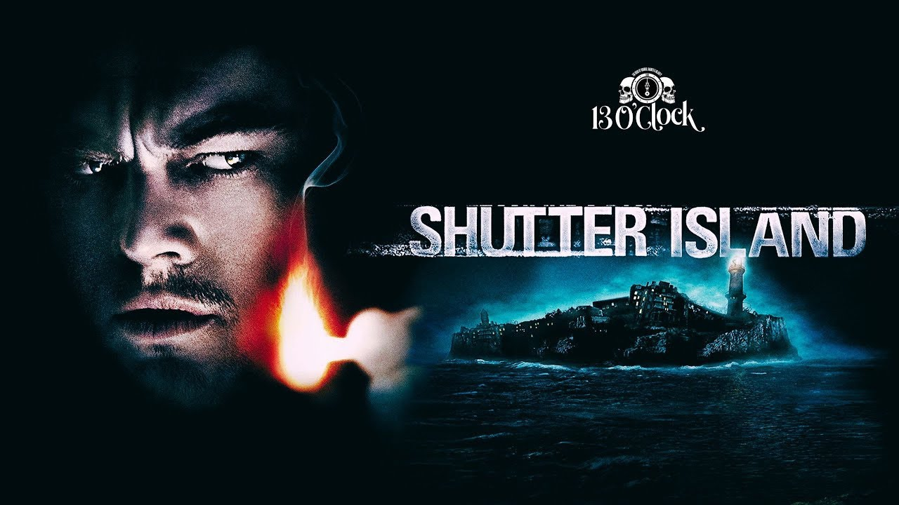

Shutter Island
📅 2/19/2010
⭐ 8.2
⏱️ 2h 18m
U.S. Marshal Teddy Daniels arrives at Shutter Island, a remote asylum for the criminally insane, to investigate the mysterious disappearance of a patient. As the case unfolds, Teddy uncovers shocking secrets about the island and his own past. Directed by Martin Scorsese and starring Leonardo DiCaprio, this psychological thriller keeps you questioning reality until the final twist.